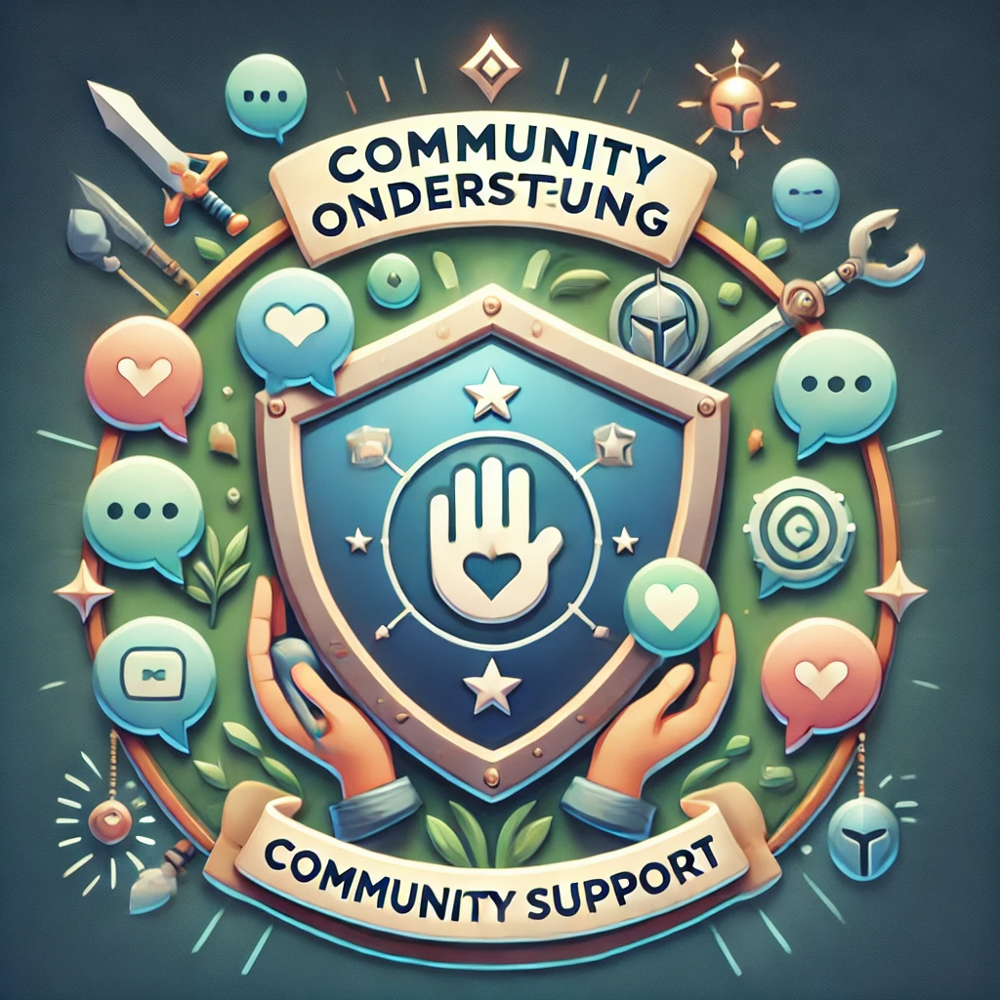
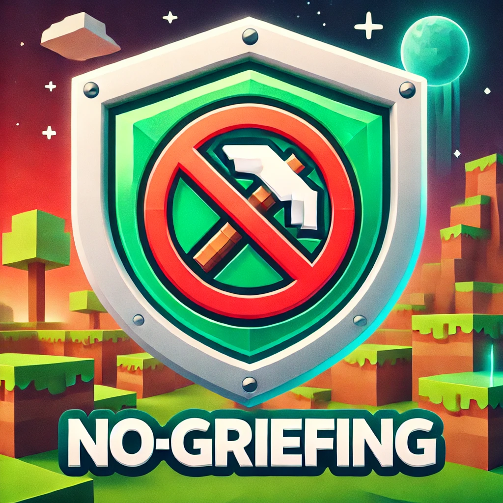
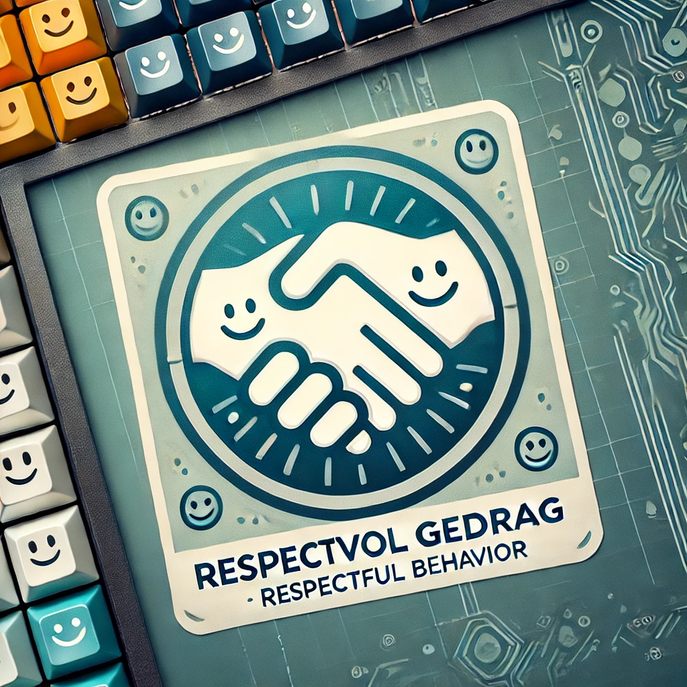
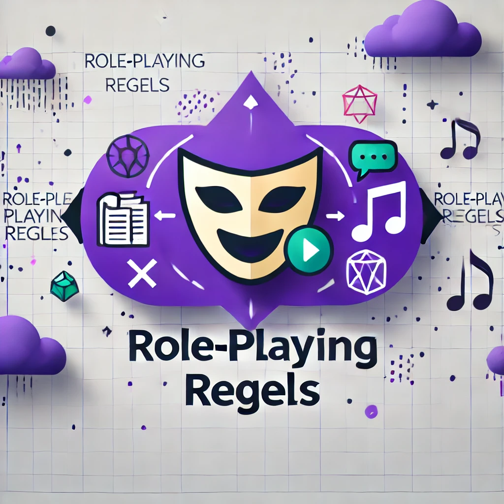
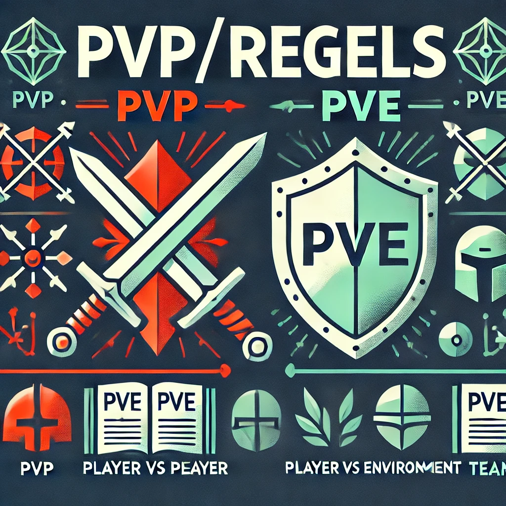
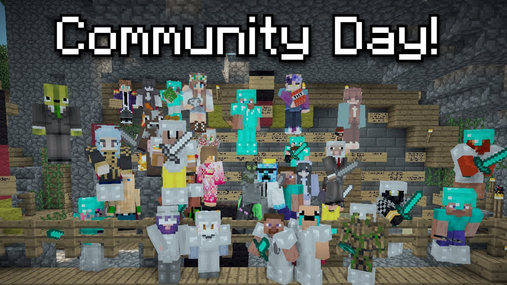

Een goede community maakt het verschil in je spelervaring.
Ontdek hoe onze community-ondersteuning je helpt de juiste server te vinden
Bij Fusey geloven we dat een sterke community de sleutel is tot een geweldige spelervaring. Een goede server is meer dan alleen een plek om te spelen; het is een levendige omgeving waar gamers met elkaar in contact komen, samenwerken en samen plezier beleven. Onze community-ondersteuningsdiensten helpen je om de sfeer, regels en verwachtingen van verschillende servers te begrijpen, zodat je een plek kunt vinden waar je je thuis voelt en vol vertrouwen kunt spelen.

Waarom is community-ondersteuning belangrijk?
Met onze community-ondersteuning krijg je alle informatie die je nodig hebt om te bepalen of een server bij jouw speelstijl en verwachtingen past.
• Gemoedelijke sfeer: Serverregels en moderatie dragen bij aan een veilige en prettige omgeving waarin spelers respectvol met elkaar omgaan.
• Actieve betrokkenheid: Een goed beheerde community zorgt voor actieve deelname en interactie tussen spelers, wat de game-ervaring verrijkt.
• Begeleiding en support: Ondersteuning van serverbeheerders helpt bij het oplossen van problemen en houdt de sfeer positief, wat essentieel is voor een langdurige community.
De Regels en Sfeer van Servers: Wat Je Moet Weten
Elke gamingserver heeft zijn eigen set aan regels en een unieke sfeer die de toon zet voor het soort ervaring dat je zult hebben. Sommige servers hanteren strikte regels om het spel eerlijk en prettig te houden, terwijl andere servers een meer vrije, open aanpak hebben. Het is belangrijk om deze regels te kennen voordat je je aansluit, zodat je weet wat je kunt verwachten en welke server het beste bij je past.
GEEN GRIEFING

Dit betekent dat spelers niet zomaar de creaties of voortgang van anderen mogen vernietigen of verstoren.
RESPECTVOL GEDRAG

Spelers worden verwacht zich beleefd en respectvol te gedragen tegenover anderen. Beledigend gedrag en toxiciteit worden vaak niet getolereerd.
ROLE-PLAY REGELS

Op role-playing servers zijn er vaak specifieke regels over hoe je je in het spel moet gedragen en hoe je in-character moet blijven om de sfeer te behouden.
PVP- PVE REGELS

Sommige servers hebben regels rondom gevechten tussen spelers (PvP) of samenwerking tegen de omgeving (PvE). Deze kunnen variëren van strikte gevechtszones tot open-world PvP.
Sfeer en Community Cultuur
De sfeer van een server wordt vaak bepaald door de regels en de community die erop speelt. Zo zijn er
Casual, relaxte servers
• Ideaal voor spelers die op zoek zijn naar een vriendelijke en ontspannen omgeving om te verkennen en samen te werken.
Competitieve servers
• Voor gamers die van uitdagingen en competitie houden, met een focus op gevechten of toernooien.
Creative servers
• Voor degenen die graag bouwen en creëren, vaak met minder focus op gevechten en meer op samenwerking en constructie.

Ontmoet de Verschillende Gaming-community's
Iedere server heeft een unieke groep spelers die samen een bepaalde sfeer en dynamiek vormen. Om je te helpen de juiste keuze te maken, bieden we gedetailleerde profielen van de verschillende community's die actief zijn op onze aanbevolen servers. Elk profiel geeft een beeld van wat je kunt verwachten qua interactie, betrokkenheid en speelstijl.
Hieronder staan een aantal voorbeelden van community-profielen. Hierdoor krijg je een beter beeld welke servers het beste aansluiten bij jouwe sociale voorkeuren en speelstijl.
De Gezellige Gilde
Een hechte, sociale groep met een focus op samenwerking. Perfect voor spelers die op zoek zijn naar een ontspannen, vriendelijke sfeer zonder veel competitie. Regelmatig worden er in-game evenementen en feestjes georganiseerd.
Arena van Eer
Een hardcore PvP-community waar de competitie hoog is en spelers constant hun vaardigheden testen in gevechten. Deze community verwelkomt zowel beginners als doorgewinterde strijders die hun grenzen willen verleggen.
Helden van het Rijk
Een role-playing community met een rijke verhaallijn en strikte regels over in-character blijven. Ideaal voor gamers die zich willen onderdompelen in een verhalende wereld waar elk personage een rol speelt.
Ondersteuning voor Spelers: Altijd hulp bij de hand
Een goede server draait op meer dan alleen spelers; het is ook afhankelijk van actieve en betrokken beheerders die zorgen voor een positieve ervaring voor iedereen. Bij Fusey vind je niet alleen servers met goed georganiseerde beheerders, maar ook verschillende manieren om ondersteuning te krijgen wanneer je het nodig hebt.
Ondersteuningsopties die vaak beschikbaar zijn:
Contact met moderators
De meeste servers hebben een team van moderators die ervoor zorgen dat de regels worden nageleefd. Bij problemen kun je direct contact opnemen via in-game meldingen of speciale supportkanalen.
Ticket-Systemen
Sommige servers gebruiken een ticketsysteem waarmee je een probleem kunt melden en later een antwoord kunt verwachten van het ondersteuningsteam.
Discord Servers
Veel servers bieden externe communicatieplatformen zoals forums of Discord-groepen waar je vragen kunt stellen, hulp kunt zoeken, en met andere spelers kunt praten.
Realtime in-game ondersteuning
Voor urgente problemen kun je vaak in-game een beheerder aanspreken, die direct kan helpen bij problemen zoals griefing, bugs of ongewenst gedrag.
We use cookies to ensure you get the best experience on our website. Learn more.